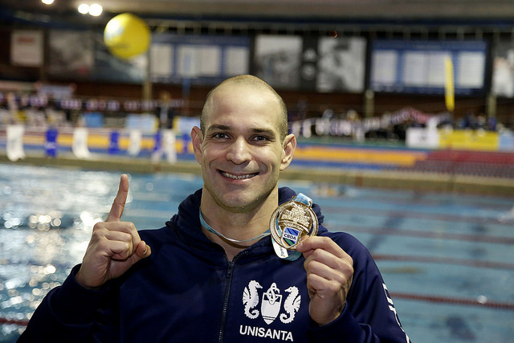

Nicholas Santos nasceu em São Paulo, Brasil, em 14 de fevereiro de 1980. Ele iniciou sua carreira na natação em uma idade jovem e ao longo dos anos se tornou um especialista em provas de nado borboleta.
Santos competiu em várias edições dos Jogos Olímpicos, representando o Brasil em eventos de natação. No entanto, ele ganhou destaque principalmente em competições de nível mundial, como o Campeonato Mundial de Natação e o Campeonato Mundial de Natação em Piscina Curta (também conhecido como Mundial de Piscina Curta).
Uma das maiores realizações de Nicholas Santos foi sua medalha de ouro no Campeonato Mundial de Natação em Piscina Curta de 2018, na prova dos 50 metros borboleta. Ele também conquistou várias medalhas em outras edições desse evento e em outras competições internacionais.
O que torna a carreira de Nicholas Santos ainda mais impressionante é sua longevidade. Ele continuou competindo em alto nível em sua década de 40, o que é raro na natação de elite. Seu sucesso ao longo dos anos fez dele uma inspiração para outros atletas e um dos nadadores mais respeitados do Brasil.
Nicholas Santos é um exemplo notável de perseverança e talento na natação brasileira e internacional, especialmente nas provas de nado borboleta.
Além do nado borboleta Nicholas Santos também pratica outras modalidades como o nado livre. No nada borboleta, ele demonstra uma técnica refinada e uma velocidade incrível. Sua habilidade em dominar a ondulação do corpo e a sincronização dos movimentos dos braços e pernas o torna um competidor formidável nessa modalidade.
No nado livre, Santos também se destaca, demonstrando uma excelente técnica e resistência. Sua capacidade de manter um ritmo constante ao longo das provas é impressionante, o que lhe permite competir de igual para igual com os melhores nadadores do mundo.
Além de suas habilidades na água, Nicholas Santos também é conhecido por sua personalidade humilde e carismática. Ele é um exemplo de determinação e superação, inspirando jovens atletas a perseguirem seus sonhos no esporte.

Prata Kazan 2015 - 50 m borboleta
Prata Budapeste 2017 - 50 m borboleta
Prata Budapeste 2022 - 50 m borboleta
Bronze Gwangju 2019 - 50 m borboleta
Ouro Rio 2007 - 4x100 m livre
Ouro Guadalajara 2011 - 4x100 m livre
Prata Rio 2007 - 50 m livre